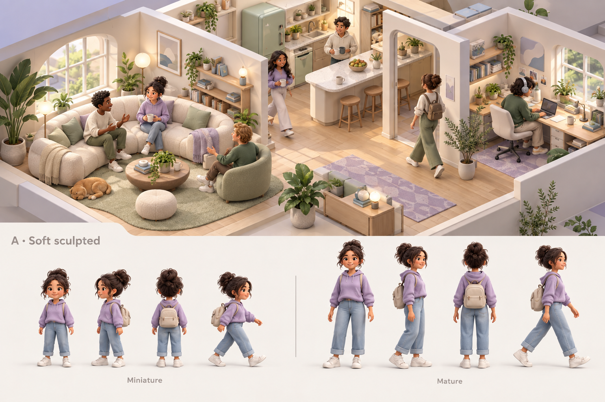
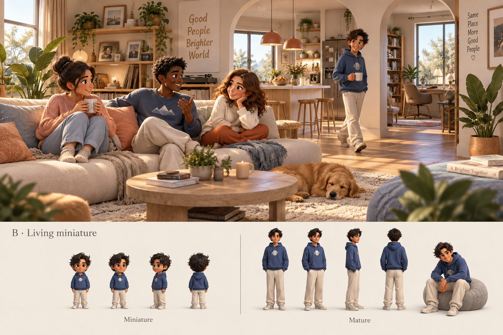
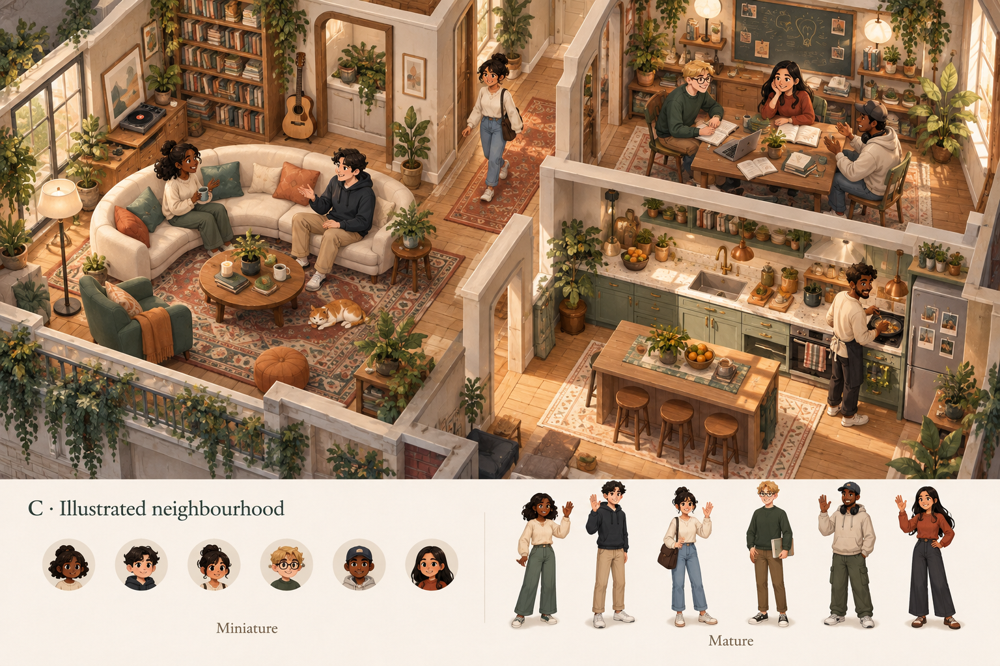

A
Soft sculpted
Airy rooms. Rounded shapes. A calm, polished dollhouse.
Three visual directions. Five live motion studies. Your choice comes first.
Soft sculpted approved · motion refinement
Airy rooms. Rounded shapes. A calm, polished dollhouse.

Closer to the characters. Cozy materials. Expressive faces.

Warm illustration. Rich details. A storybook home.
These are generated still concepts, not game screenshots or rigged characters. Decorative details are suggestions. A and B show body proportions; C is a room-and-character illustration direction.
A continuous route through the lounge, study and kitchen. No room-navigation buttons or scene swaps.
This separately built 3D rig demonstrates timing, posture and connected-space movement. It does not animate the illustrated characters above and is not a final character model. Door access, occupancy and voice are not simulated in this motion study.
No art direction shortlisted yet.
Soft sculpted is approved. Alternative shortlists remain local references; they do not change your confirmed choice.